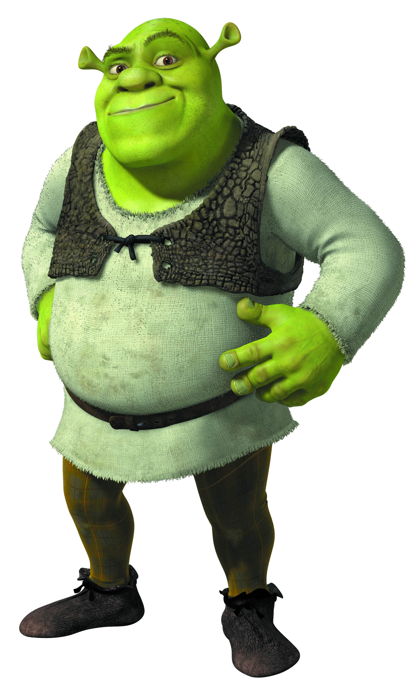
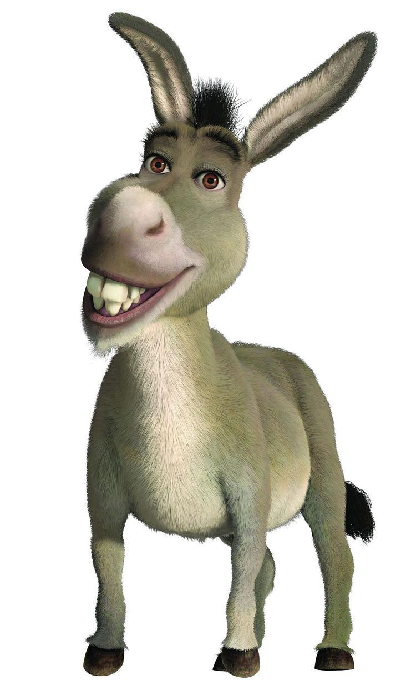
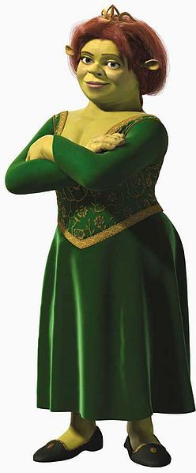

Shrek

Ele é um Ogro, que vivia sozinho na solidão, porém, sua vida mudou depois que conheceu seu amigo Burro, assim como outras pessoas pelo caminho. Ele se casou com a princesa Fiona, filha e filha única da rainha Lillian e do falecido rei Harold, os governantes do reino de Tão, Tão Distante, antes que o governo do reino fosse passado para Arthur Pendragon, que era sobrinho do rei Harold.
Burro

Burro é extremamente falador. No entanto, apesar de sua excitação infantil, ele é lúcido, pois não vê Shrek como uma ameaça quando ele ruge para ele. Ele gosta de dançar, gosta de cantar, conversa fiada, o que se torna bastante irritante para aqueles ao seu redor.
Fiona

Fiona é inicialmente retratado como o arquétipo princesa de contos de fadas, falando formalmente em matéria de namoro, com elevadas expectativas de como ela está a ser resgatado, que é para salvá-la, e assim por diante. Mais tarde, eu verdadeiro da Princesa Fiona surge, como ela é realmente uma mulher muito terra-a-terra e independente, que é uma partida para ou até mesmo melhor do que Shrek quando se trata de os maus hábitos que ele tem. Ela é um amigo leal, e ao contrário de princesas de contos de fadas, um especialista em combate corpo-a-corpo com o conhecimento das artes marciais japonesas.